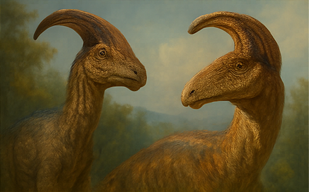

← Back
Parasaurolophus

Personality Traits
- Melodic caller—your crest echoes emotions.
- Peaceful negotiator—calms even the fiercest pack.
- Water-lover—finds serenity by lakes and rivers.
Romance Compatibility
- Archaeopteryx: Your songs enchant their flight.
- Stegosaurus: Steady rhythms match your melodies.
- Apatosaurus: Gentle giants share tranquil vibes.
Yearly Omikuji Fortune
- Overall Luck
- 中吉 (Middle Blessing): Harmony guides you forward.
- Love
- Your heartfelt call draws kindred spirits.
- The Person You’re Waiting For
- An understanding listener who values your voice.
- Something You’ll Lose
- A quiet doubt—trust in your own song.
- Studies & Learning
- Good: Musical practice sharpens your focus.
- Work & Projects
- Excellent: Collaborative events flourish under your guidance.
- Taking a Trip
- Best: Lakeside retreats tune your spirit.
- Your Wishes
- Achievable: A heartfelt dream resonates into reality.